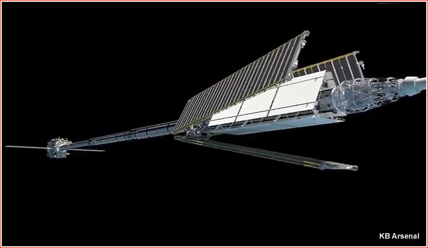

RÚSSIA REVELA IMAGENS DE UM REBOCADOR ESPACIAL NUCLEAR
Depois de anos de um quase que total silencia, um proeminente desenvolvedor militar de naves espaciais russo, repentinamente publicou as primeiras imagens de um transporte espacial massivo baseado em energia nuclear que está sendo montado nas instalações da empresa em São Petersburgo. O birô de design KB Arsenal, que serve como primeiro contratante do projeto é conhecido por seus satélites nucleares da era soviética, um dos quais se acidentou na região do Ártico em 1977.
Uma série de fotos e imagens geradas em computador, que apareceu na internet em 2020 e originou da KB Arsenal claramente revelou a última versão e as operações planejadas de um grande rebocador espacial movido por motores elétricos e por uma fonte nuclear.
O projeto é oficialmente conhecido como Transport and Energy Module, ou TEM, é bem conhecido daqueles que acompanham o programa espacial russo por mais de uma década.

As origens estão lá no início da Era Espacial, o conceito TEM está tentando casar um reator nuclear com um motor elétrico. O sistema de propulsão elétrico aquece e acelera um gás ionizado para criar um jato que gera empuxo, e por isso, esses motores são conhecidos como motores de íon ou de plasma. Quando medido por unidade de massa gasta de propelente, motores elétricos são mais eficientes do que os motores de foguetes tradicionais movidos a combustíveis líquido ou sólido, mas o empuxo é relativamente baixo e eles precisam de uma grande fonte de energia elétrica para poder operar. Por conta disso, até recentemente, o uso prático da propulsão elétrica em voos espaciais era limitada para fazer ajustes orbitais de satélites ou para missões do espaço profundo,
onde uma sonda poderia tirar proveito do baixo empuxo por um longo período de tempo. Por exemplo, a sonda Dawn da NASA usava esse tipo de propulsão, e para quem não entendeu é o devagar e sempre.
Para escalonar a operação de poderosos motores elétricos, os engenheiros por muito tempo consideravam trocar os pesados painéis solares por fontes de energia nuclear, que poderiam fornecer eletricidade por anos, décadas e não dependeriam da radiação solar nas regiões longínquas e frias do nosso Sistema Solar, como já foi demonstrado por missões planetárias como a Voyager, Cassini e muitas outras.
Contudo, o desenvolvimento de reatores nucleares para o espaço ainda deveria acontecer na Terra, onde todas as preocupações com segurança e com o meio ambiente retardaram e muito o progresso nesse campo.

Ainda assim, no início do século 21, os militares russos aparentemente renovaram o interesse na grande capacidade dos reatores nucleares em fornecer energia elétrica não só para sistemas de propulsão, mas também para outros equipamentos a bordo de grandes naves espaciais, como poderosas antenas de radar.
Com um grande portfolio de tecnologia nuclear e com um bom orçamento, o Mnistério da Defesa Russo se tornou, aparentemente, o principal patrocinador da primeira tentativa pós-soviética de construir um sistema espacial baseado em energia nuclear. Obviamente, que o trabalho no reator era algo altamente secreto, mas em 2020, a KB Arsenal liberou fotos mostrando que pareceu ser a montagem do veículo TEM em escala completa ou seu protótipo e uma animação de como seria o veículo em órbita.
O coração do transportador TEM é um reator nuclear que gera calor. O calor é então convertido em força elétrica através de uma turbina mecânica ou via o método de emissão térmica,
que não envolve parte móveis. Apesar de ser menos efetivo que uma turbina, o mais simples e mais familiar à indústria russa, a conversão de emissão térmica parece ser o método que está a bordo do veículo TEM revelado em 2020.
O excesso de calor inevitavelmente gerado no processo do trabalho do reator é lançado para o espaço com um sistema de radiadores, que pode também usar uma variedade de diferentes tecnologias para operar nas condições do espaço. O veículo TEM revelado parece ter um trio de radiadores principais e auxiliares. Os painéis menores provavelmente devem servir o sistema de serviço a bordo da nave, enquanto que os radiadores maiores foram provavelmente desenhados para remover o calor da reação. A animação mostra um complexo processo de 3 estágios de liberação do radiador principal a bordo do módulo TEM.

Contudo, no veículo não revelado, os painéis do radiador aparecem usando um tipo de fluido de resfriamento bombeado através do sistema por uma turbina. Essa é uma tecnologia menos progressiva do que o sistema de irradiação de tubo de calor capilar que foi originalmente planejado para a nave e no qual a Rússia estava testando a bordo da estação espacial MIR.
Para proteger todos os sistemas a bordo da sonda, da radiação, o reator é colocado atrás de um escudo em forma de cone que forma uma sombra protetora livre de partículas perigosas. Para melhorar e ampliar a zona de segurança, o reator é acoplado ao que parece ser um braço telescópico com 4 seções, feito de um material leve. O braço se estica totalmente depois que a nave se separar do seu veículo de lançamento em órbita.
De acordo com as publicações disponíveis, o reator nuclear no veículo TEM seria atividade depois que a nave atingisse uma órbita entre 600 e 800 quil6ometros, o que é longe o suficiente da atmosfera rarefeita o que evitaria um decaimento natural e a reentrada do satélite. Nesse intervalo até atingir a órbita,
todos os sistemas de serviço do transportador espacial e as suas cargas úteis ainda receberiam energia de um par de painéis solares liberados na parte lateral do módulo de propulsão imediatamente depois que entrasse em órbita.
As fotos liberadas pela KB Arsenal, em 2020 mostram os principais componentes desse grande veículo incluindo o módulo de propulsão, os radiadores estacionários e destacáveis e o braço que carregaria o reator. Não foram mostradas fotos do reator em si, contudo as fotos foram mostradas junto com uma animação que foi datada de 2020. Aparentemente, mesmo sem carga útil, o TEM Russo seria um veículo entre 20 e 30 toneladas, que necessitaria de um foguete ou o Angara-5M, ou o Angara-5V para entrar em órbita e seria lançado do espaçoporto de Vostochny. Um desenho produzido pela GKNPTs Krunichev feito por volta de 2016 mostrou o foguete Angara-5V com um estágio superior Briz, carregando o veículo TEM.

Fonte:
http://www.russianspaceweb.com/tem.html